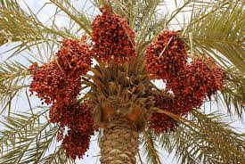

Greece Farmers Market
Olives
Olives are mainly grown in the central, coastal, and island areas of Greece. Olives are very important for the production of olive oil, which is one of the main ingredients in Middle Eastern cusine and Mediterranean cusine
Figs
Figs are grown all over Greece, and primarially in Evia and Kymi. Figs can be eaten fresh or dried, and can be made into rolls, biscuits, and other types of desserts.
Dates
Dates mostly grow of the island of Crete in southern Greece. Dates can also be used in many different types of desserts.

Oranges
Oranges are primarially grown in Laconia and Arta. Oranges are a peeled fruit that can be eaten, or put into many different things.
Apricots
Apricots are mainly produced in the Peloponnese and Thessaly. Apricots are similar to peaches, and range in taste from sweet to tart.
Olive Oil
Olive oil is one of the main products made in Greece, and is made by pressing whole olives and extracting the oil. It is used in cooking, and commonly for salad dressing
Wine
Greece is one of the oldest wine producers in the world, with the earliest wine being dated to 6,500 years ago. Now, it is a major part of Greece.
Cheese
Cheese is a big part of Greek culture, and is also something that dates back to a very long time ago. Initially, sheep milk was used, but now goat milk is more common.